Прошивка микроконтроллера
|
|
|
|
|
Прошивка микроконтроллера |
Первый вопрос, который возникает при знакомстве с контроллерами STM32103C8T6, это как залить "прошивку" в микроконтроллер?
Существует три варианта:
используя UART
используя GTAG
написать собственный загрузчик
для варианта UART потребуется адаптер USB-UART 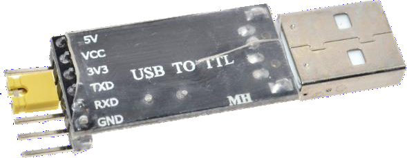
для варианта JTAG потребуется ST-LINK/V2 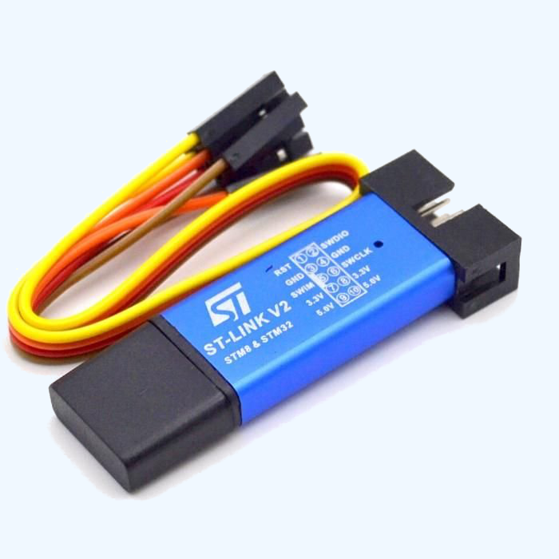
для варианта UART - Flash Loader Demonstrator
для варианта JTAG - STM32 ST-LINK Utility
Использование UART- самый простой вариант прошивки. Утилита "Flash Loader Demonstrator" бесплатна и её можно скачать как с официального сайта, так и отсюда (link).
В системной области памяти микроконтроллера зашит bootloader. Именно он и позволяет записать прошивку во flash-память через последовательный интерфейс.
Детально bootloader описан в документе AN2606 ( CD00167594.pdf ), а используемый им протокол - в документе AN3155 ( CD00264342.pdf ). Это для тех, кто хочет исчерпывающей информации, а мы рассмотрим процесс прошивки через bootloader вкратце.
Для начала вам нужно установить себе на компьютер утилиту "Flash Loader Demonstrator".
Далее, нужно соединить контроллер с компьютером через UART1. STM32F103C8T6 имеет 48 - выводный корпус, в котором UART1 выведен на ноги 30 - PA9 - (Tx) и 31 - PA10 - (Rx). Подключить +5V и GND к микроконтроллеру.
Обратите внимание, что в контроллере используется UART с уровнями 0/+3,3V, а не 0/+5V, как у Arduino.
"Ногу" Tx контроллера нужно соединить с "ногой" Rx адаптера USB - UART, а "ногу" Rx контроллера - с ногой Tx адаптера. Кроме этого, контроллер нужно запитать и обеспечить нужные уровни на ногах BOOT0 ( pin 44 ), BOOT1 ( PB2 - pin 20 ). Для запуска bootloadera ногу BOOT1 нужно подтянуть к "земле" или GND, а BOOT0 - к "питанию" 3.3V, для этого на контроллере есть перемычки BOOT0 и BOOT1. Или проще: поместить перемычку BOOT0 в положение "1". Нажать и отпустить "Reset", после этого котроллер входит в режим загрузки.
Далее пользуемся утилитой "Flash Loader Demonstrator". Откроется страничка, на которой нужно выбрать com-порт, скорость обмена.
Чётность и
количество бит данных уже настроены как надо, скорость можно менять -
контроллер в процессе инициализации обмена настраивается на выбранную
скорость автоматически, COM-порт нужно выбрать тот, который создался
при подключении USB-to-COM адаптера к компьютеру. После того, как всё
настроили - жмём "Next".
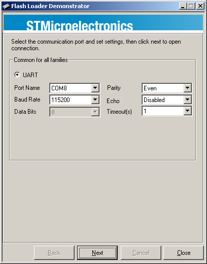
О том, что всё нормально и соединиться с контроллером удалось, нам сообщит зелёный сигнал светофора на следующей страничке. Если связь не установится - на эту страничку нас вообще не пустят, сообщив, что контроллер не отвечает.
При
установлении связи программа автоматически определит сколько у
контроллера flash-памяти и защищена ли эта память от чтения. Если
память защищена, то нажав кнопку "Remove protection" защиту
можно снять, но при этом содержимое памяти будет стёрто (предыдущая
записанная туда прошивка уничтожится). Жмём "Next".
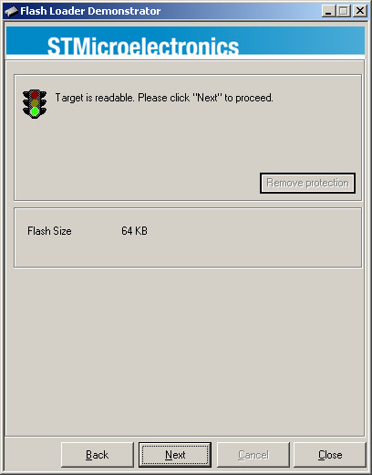
В следующем
окне нам предлагают выбрать тип микроконтроллера ( хотя
непонятно зачем, - он и так автоматически определяется ), а
также показывают для нашего контроллера PID, карту flash-памяти, и
версию bootloader-а. Просто жмём "Next".
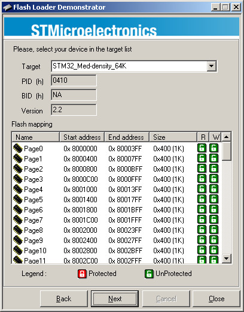
В следующем
окне нужно выбрать, что мы собственно хотим с нашим контроллером
делать. Тут возможны следующие варианты: "Erase"
( стереть ), "Download to device" ( загрузить
в контроллер прошивку ), "Upload from device"
( считать прошивку с контроллера ), "Enable / Disable
Flash protection" ( включить / выключить защиту
flash-памяти ), Edit option bytes ( изменить байты опций ).
Соответственно, если мы хотим залить "прошивку" - выбираем
"Download to device", потом жмём на квадрат с тремя точками
и выбираем в проводнике файл с прошивкой, которую надо залить, после
чего опять жмём "Next".
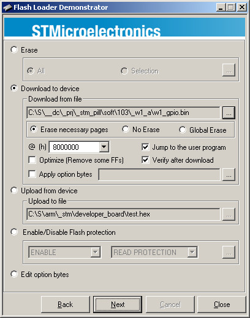
На следующей
странице внизу появится прогресс-бар, в котором будет показан ход
выполнения процедуры загрузки.
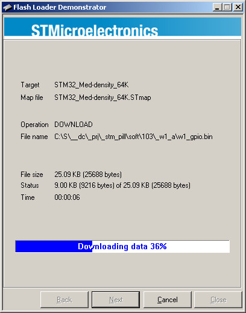
После того,
как вся прошивка будет загружена в контроллер, этот прогресс-бар
станет зелёным и в нём белыми буквами будет написано: "Download
operation finished successfully" ( операция загрузки
успешно завершена ).Далее, можно нажать кнопку "Close"
чтобы закрыть "Flash Loader Demonstrator" или "Back",
чтобы вернуться на стартовую страничку.
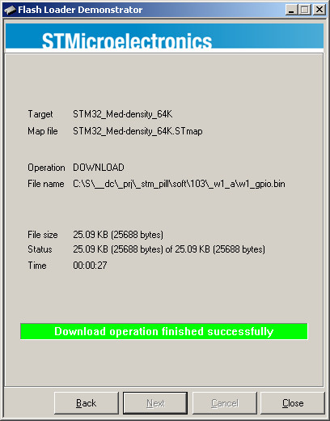
Вернуть перемычки в состояние "0" и нажать "Reset", чтобы программа начала выполняться.
В этом случае вам нужно установить себе на компьютер утилиту "STM32 ST-LINK Utility" и подключить ST-LINK/V2, подать питание на плату микроконтроллера. Рекомендуется использовать питание 5V.
После запуска
STM32 ST-LINK откроется стартовая страничка программы.
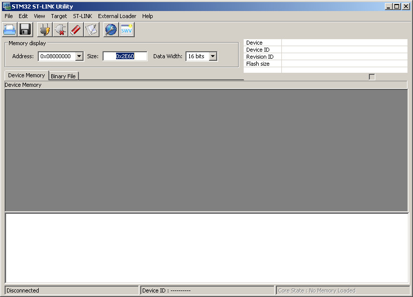
Нажать кнопку
"Connect to the target". Микроконтроллер должен
определиться автоматически.
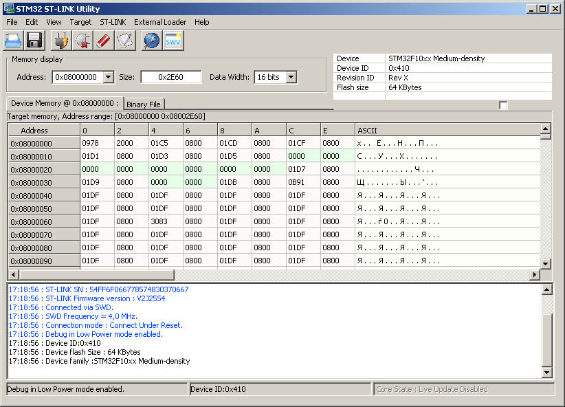
Нажимаем
кнопку "Open file", в открывшемся окне выбираем нужный
файл.
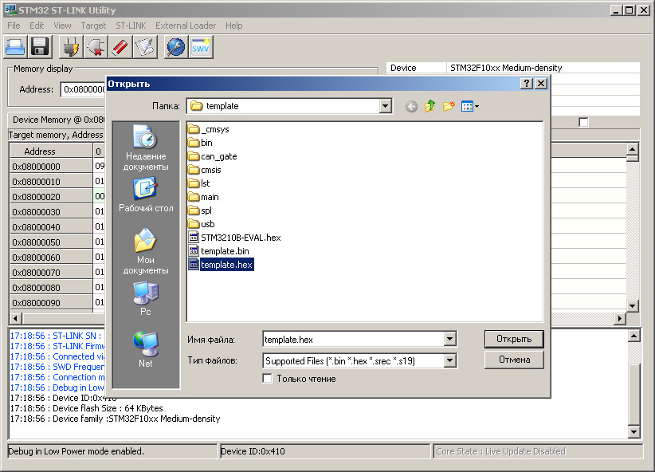
Далее в меню
выбираем "Target" -> "Program &
Verify"... ( CTRL+P )
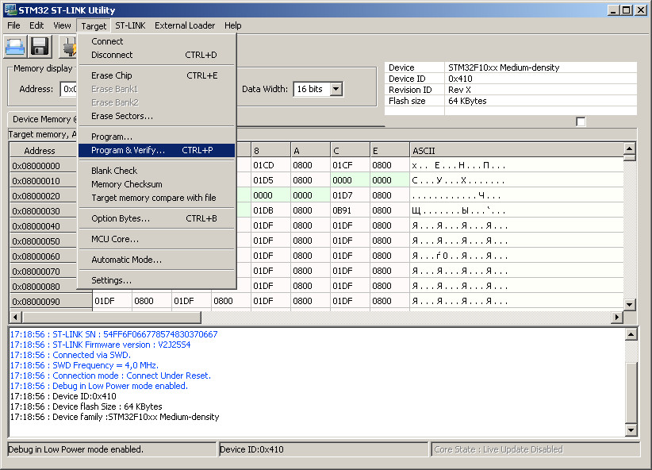
В открывшемся
окне "Download" нажимаем "Start". Программа
должна загрузиться и в случае, если установлен флажок "Reset
after programming" стартовать автоматически.
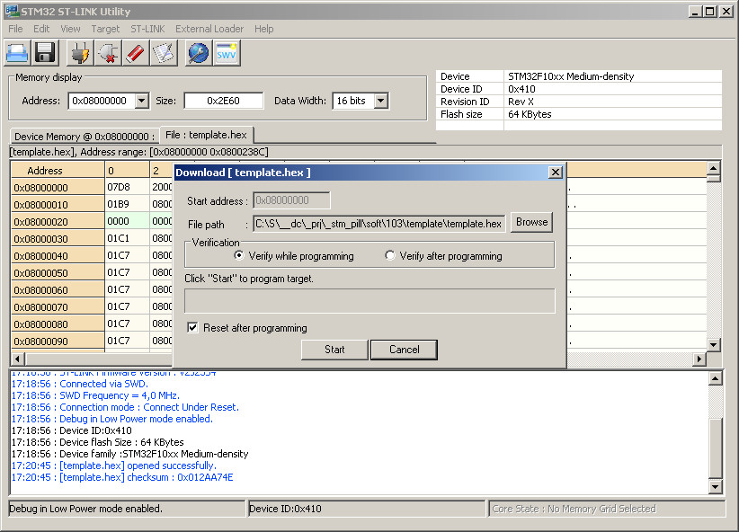
В случае, если при попытке коннекта микроконтроллер не определился, то одна из вероятных причин - это ремаппинг "ног" JTAG. В этом случае последовательность действий следующая:
Нажать и удерживать "Reset" на плате микроконтроллера.
Нажать кнопку "Connect to the target", подождать 1 секунду и отпустить "Reset".